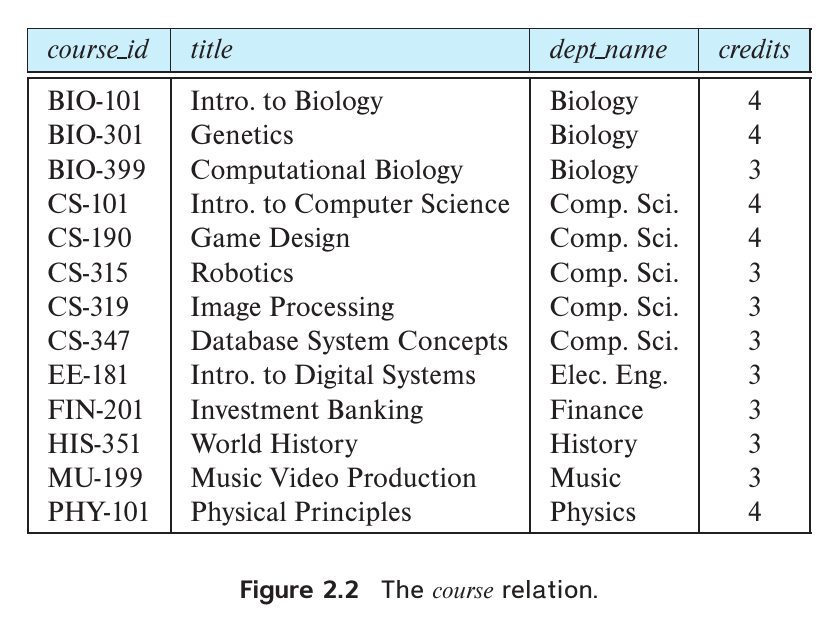
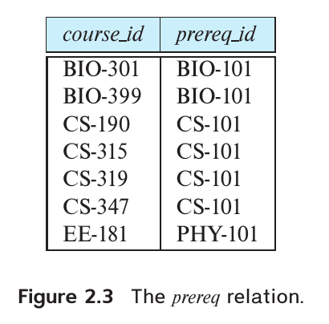
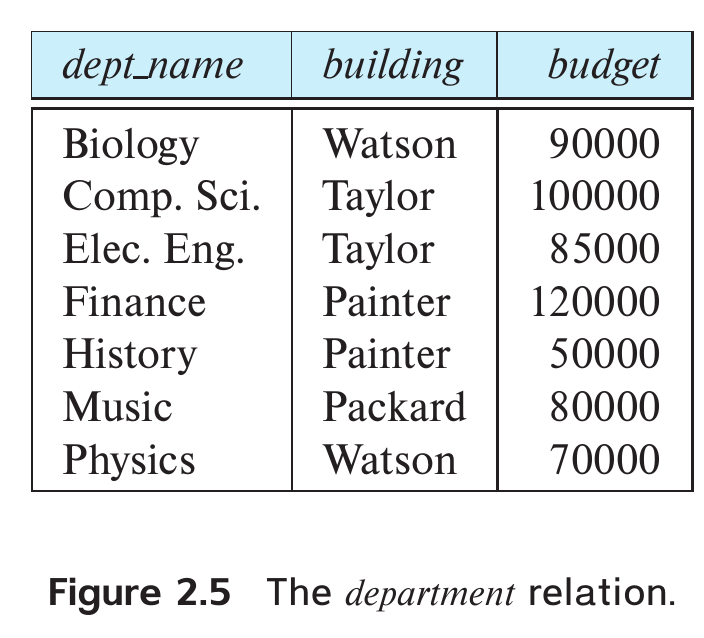
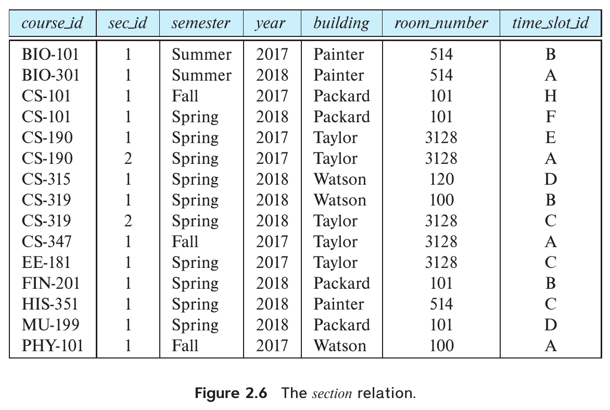
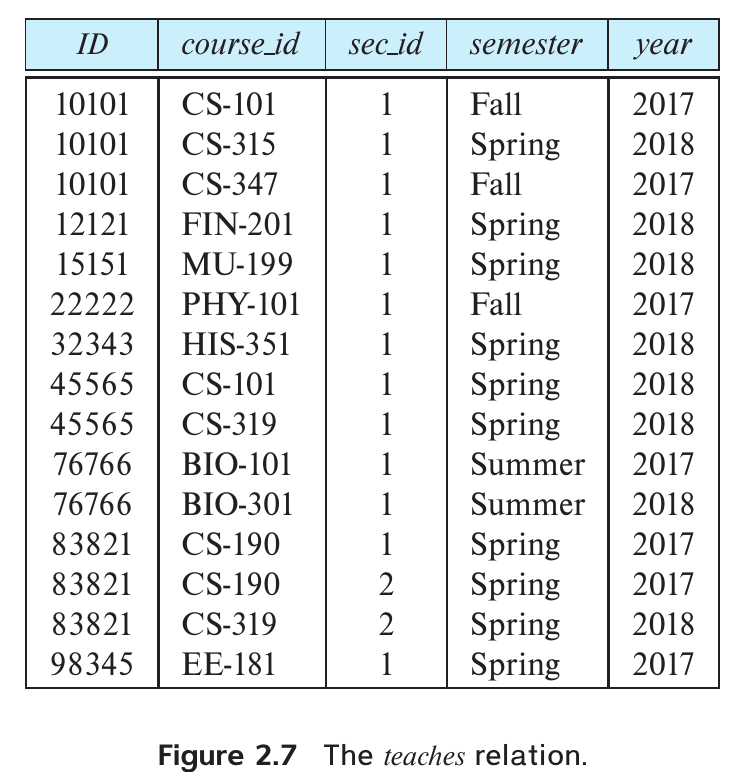
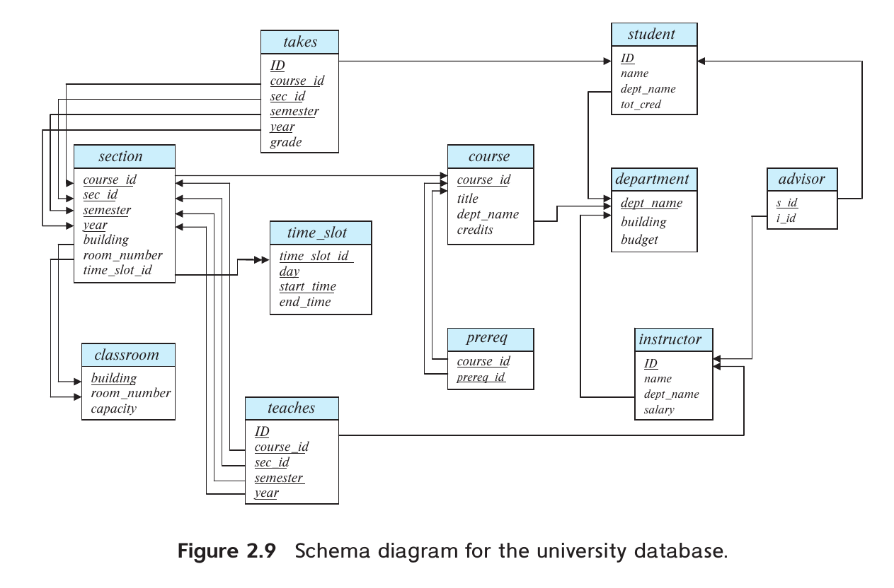

Chapter 2: Introduction to the Relational Model
Subchapters 2.1 - 2.5
2.1 Structure of Relational Databases
The relational model represents data as a collection of tables. Let's map everyday terms to formal relational database terminology:
- Relation: The formal mathematical term for a Table.
- Tuple: The formal term for a Row (a sequence of values).
- Attribute: The formal term for a Column (a specific data property).


Worth noting is that:
The order in which tuples appear in a relation is irrelevant, since a relation is a set of types.
Domains and Atomicity
Every attribute has a permitted set of values, called the domain of that attribute.
- Atomic Values: We require that domain values be indivisible. For example, a single integer is atomic.
- Non-Atomic Example: A
phone_numbers attribute containing a list like "555-1234, 555-9876" is NOT atomic. It must be broken down.
- The Null Value: A special value signifying that a value is unknown or does not exist. Nulls can cause difficulties in mathematical operations (e.g., what is $5 + \text{null}$?).
Discussion: The Atomicity Rule
Consider an e-commerce database where users have multiple shipping addresses.
- If we stuff all addresses into a single
address text column separated by commas, we violate atomicity.
- Discussion Question: If a user's address column is non-atomic, what specific problems would a programmer face when trying to write a query to find "all customers living in the city of Iloilo"?
2.2 Database Schema
Just as Chapter 1 discussed abstraction, we must distinguish between the logical design and the data itself.
- Relation Schema: The logical design of a single table. It consists of the relation name and a list of its attributes.
Example: instructor(ID, name, dept_name, salary)
- Relation Instance: A snapshot of the specific tuples (rows) containing data at a given moment.
- The schema rarely changes; the instance changes every time someone inserts, updates, or deletes a record.
Example of a schema:

The schema for this table is:
department(dept_name, building, budget)


2.3 Keys: Identifying Tuples
To distinguish one tuple from another, we use keys. No two tuples in a relation are allowed to have exactly the same values for all attributes.
- Superkey: A set of one or more attributes that uniquely identifies a tuple within a relation.
- If
ID is a superkey of instructor, then no two instructors can have the same ID.
- Combinations can be superkeys too! If
ID is unique, then the combination (ID, name) is also mathematically a superkey, even though name is unnecessary for uniqueness.
Candidate Keys & Primary Keys
We prefer keys that don't have unnecessary attributes.
- Candidate Key: A minimal superkey. It uniquely identifies a row, and if you remove any attribute from it, it loses its uniqueness property.
- Primary Key: The specific candidate key chosen by the database designer as the principal means of identifying tuples.
- Primary keys are customarily listed before other attributes in the schema and are underlined.
Example: student(ID, name, tot_cred)
Key Conventions
We usually write the primary key attributes of a relation schema before the other attributes. And we underline them as well.
classroom(building, room_number, capacity)
Foreign Keys & Referential Integrity
Relations don't exist in isolation. They refer to each other.
- Foreign Key: An attribute in one relation (the referencing relation) that points to the primary key of another relation (the referenced relation).
- Referential Integrity Constraint: A rule stating that a value appearing in a foreign key MUST also exist as a primary key in the referenced table.
- Example: An instructor belongs to a
dept_name. That dept_name MUST exist in the department table. You cannot assign a teacher to a ghost department!
The schema for this table is:
department(dept_name, building, budget)
The schema for this table is:
instructor(ID, name, dept_name, salary)
dept_name is a foreign key.
Quick Review: Checkpoint 1
Test your understanding of relation keys:
- Why is the combination of
(Social Security Number, Last Name) considered a Superkey but NOT a Candidate Key?
- If a student tries to enroll in course "CS-101", but "CS-101" does not exist in the
course table, what specific constraint is being violated?
- True or False: A primary key column is allowed to contain a
null value.
2.4 Schema Diagrams
We visualize the structure of an entire database using schema diagrams.
- Each relation appears as a box with its attributes listed inside.
- The Primary Key attributes are underlined.
- Foreign Keys are represented by arrows extending from the referencing attribute to the primary key of the referenced relation.
Visualizing the University Schema

Notice how arrows enforce logical dependency. If you drop the department table, the instructor table is suddenly left with broken foreign key arrows pointing to nowhere (orphan records).
2.5 Relational Query Languages
A query language is the language in which a user requests information from the database. They fall into two paradigms:
- Imperative Languages: The user specifies a detailed sequence of operations to compute the result (the "how").
- Declarative Languages: The user specifies what data is needed, leaving it to the database engine's Query Processor to figure out the best execution path.
- SQL (Structured Query Language) is primarily declarative.
Pure Query Languages
Before SQL became the commercial standard, computer scientists defined three "pure" mathematical languages that form the foundation of relational theory:
- Relational Algebra: Procedural. Uses mathematical operators like Select ($\sigma$), Project ($\Pi$), and Join ($\bowtie$).
- Tuple Relational Calculus: Non-procedural. Defines desired tuples using formal logic.
- Domain Relational Calculus: Non-procedural. Defines desired domain values using formal logic.
Quick Review: Checkpoint 2
Wrapping up the first half of Chapter 2:
- In a schema diagram, what does an arrow drawn between two tables represent?
- Is SQL considered an imperative or a declarative query language? Why is this beneficial to developers?
Summary of 2.1 - 2.5
- Vocabulary Matters: Relations (tables), tuples (rows), and attributes (columns) form the structural backbone.
- Keys Ensure Identity: Primary keys prevent duplicate records. Foreign keys enforce referential integrity between tables.
- Schema Diagrams: Act as blueprints, mapping out primary keys and dependency arrows.
- Declarative Power: Relational query languages allow users to ask for data by stating what they want, rather than programming exactly how to fetch it.